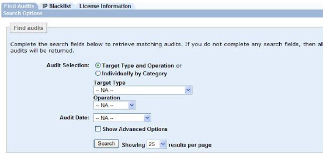
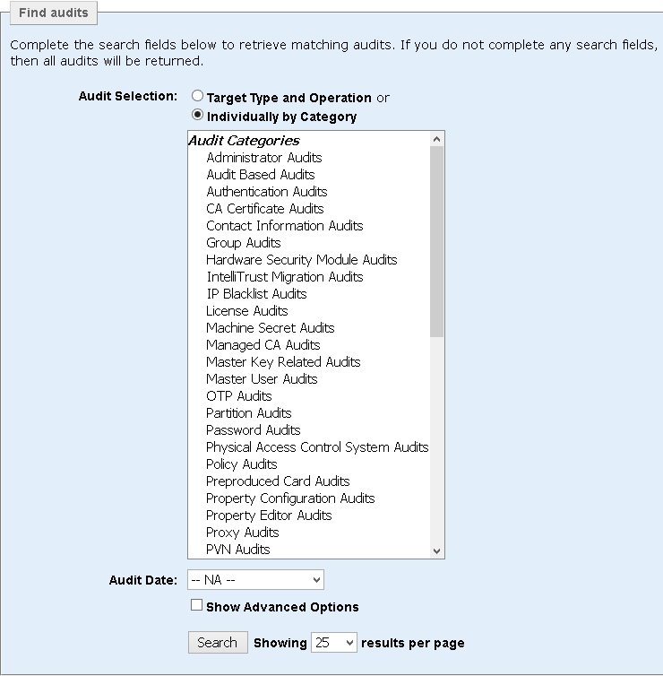
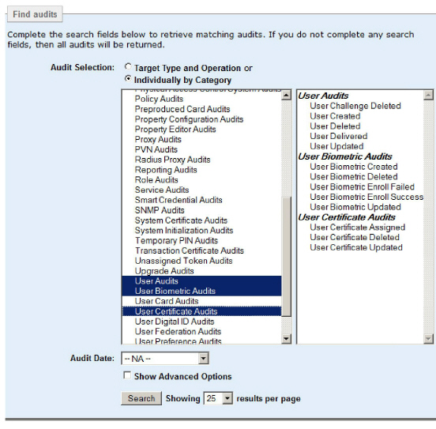
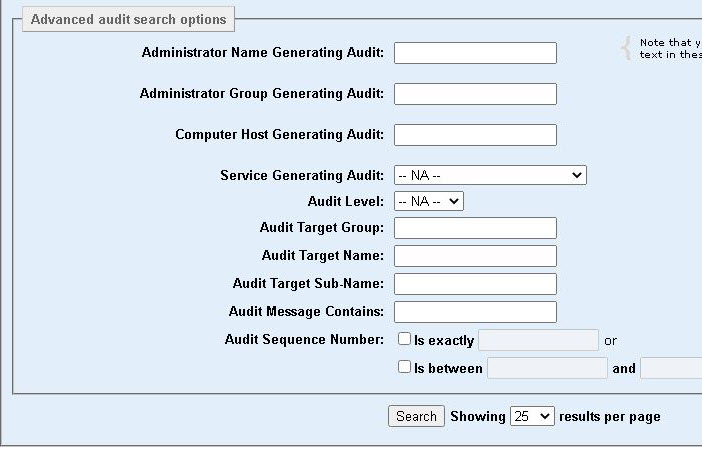
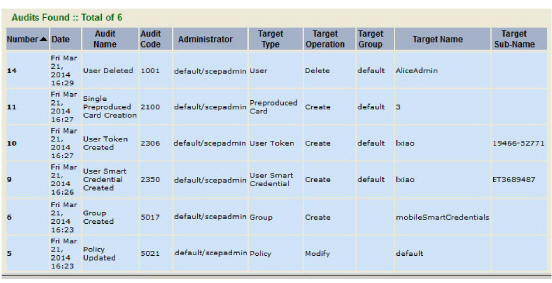

|
IdentityGuard Server 13.0 Administration Guide |
|
IdentityGuard Server 13.0 Administration Guide |
This section describes how to use the capabilities of the Administration interface to search for and display audit data stored in the audit database.
To view audits, you need to have configured a database to capture audits. For more information, see Configuring an audit database.
To find audits to view in the Administration interface
1. Log in to the Administration interface (Log in and out of the Administration interface).
2. Click System.
The Find audits screen appears (if auditing is configured). You use this screen to search for the exact audits you want to display.

3. To search for audits based on their target type and operation, select Target Type and Operation. The audits record operations like create or delete on the various items or structures (such as user or token) in Entrust IdentityGuard.
a. From the Target Type drop down menu, select the target type. Examples of Entrust IdentityGuard targets include User, Role, Report, Unassigned Token, and Policy.
b. From the Operation drop down menu, select the operation. Examples of operations are Assign, Authenticate, Create, Delete, Import, and Modify.
4. To search for specific audits, select Individually by Category.
The Audit Categories list box appears.

a. Select one or more audit categories from the list.
All of the audits in that category appear in another list box.

b. From the right-hand window displaying the individual audits, select one or more audits to display.
5. From the Audit Date drop down menu, select the date range of the audits you want to find. If you select custom date range, you can select the start and end dates for the search.
If you do not make a selection, all audits that match the operation and target type criteria are displayed.
6. Select Show Advanced Options to specify more search criteria.
The Advanced audit search options panel appears.
You can use all or none of the search options in the Advanced audit search options screen.

a. Administrator Name Generating Audit — Enter the user name of the administrator whose audits you want to see.
b. Administrator Group Generating Audit — Enter the group the administrator generating the audits belongs to.
c. Computer Host Generating Audit — Enter the name of the computer host the audits came from.
d. Service Generating Audit — Select the service the audits are generated from. The choices are: Master User Shell, Administration Service, Web Administration, Authentication Service, Properties Editor, Radius Proxy, and Windows Configuration Utility.
e. Audit Level — Choose one of INFO, WARN or ERROR.
● Audit Target Group — Enter the name of the group for which you want to view audits. If the audit involves a user or something associated with a user like an assigned card or token, then the target group is that user's group.
● Audit Target Name — Enter the name of the target for the audits you want to see. If the audit is a user-based audit, the target is the user name; if the audit is about a group, then the target is the group name, and so on.
● Audit Target Sub-Name — Enter the sub-name of the target for the audits you want to see. Not all audits include sub-names. An example of an audit that does is a create or delete audit for a user’s grid. In this example, the target name is the user name, and the target sub-name is the serial number of the grid.
● Audit Message Contains — Enter a text string to search the audit file for. Audits containing the search string are displayed. Audit text searches can be slow if your system has a large number of audits, so it is recommended that this search be used only if it is difficult to find the information using other search criteria.
● Audit Sequence Number — Enter the exact sequence numbers or the range or sequence numbers to search for in the audit file. Each audit is automatically assigned a sequence number when it is generated. The oldest audits have the lowest sequence numbers, so the most recently generated audits are those with the highest sequence numbers.
7. Click Search.
The Search results screen appears. The Number column displays the audit sequence number.
